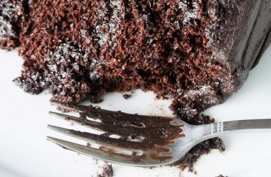
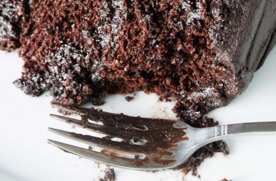

The Most Amazing Chocolate Cake is here. Moist, chocolaty perfection. This is the chocolate cake you've been dreaming of!
Ingredients
- butter and flour for coating and dusting the cake pan
- 3 all-purpose flour
- 3 granulated sugar
- 1 1/2 unsweetened cocoa powder
- 1 tablespoon baking soda
- 1 1/2 teaspoons baking powder
- 1 1/2 teaspoons salt
- 4 large eggs
- 1 1/2 buttermilk
- 1 1/2 warm water
- 1/2 cup vegetable oil
- 2 teaspoons vanilla extract
Instructions
- Preheat oven to 350 degrees. Butter three 9-inch cake rounds. Dust with flour and tap out the excess. 🍚
- Mix together flour, sugar, cocoa, baking soda, baking powder, and salt in a stand mixer using a low speed until combined. 🍬
- Add eggs, buttermilk, warm water, oil, and vanilla. Beat on a medium speed until smooth. This should take just a couple of minutes. ⏰
- Divide batter among the three pans. I found that it took just over 3 cups of the batter to divide it evenly. 🥧
- Bake for 30-35 minutes until a toothpick inserted into the center comes out clean. 🍪
- Cool on wire racks for 15 minutes and then turn out the cakes onto the racks and allow to cool completely. 🍰
- Frost with your favorite frosting and enjoy! 🎂
This cake is moist and has the perfect crumb. I cannot imagine making a chocolate cake using any other recipe.
 
